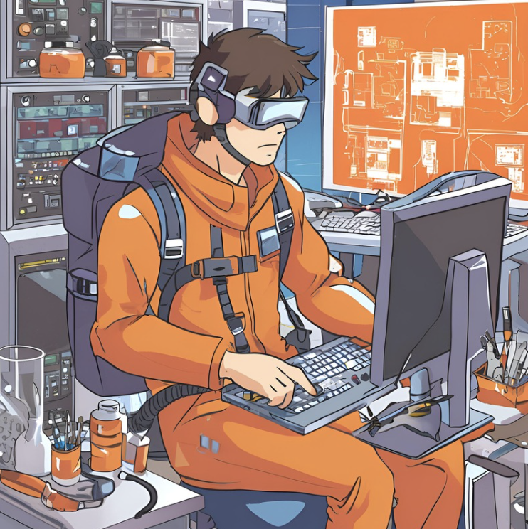
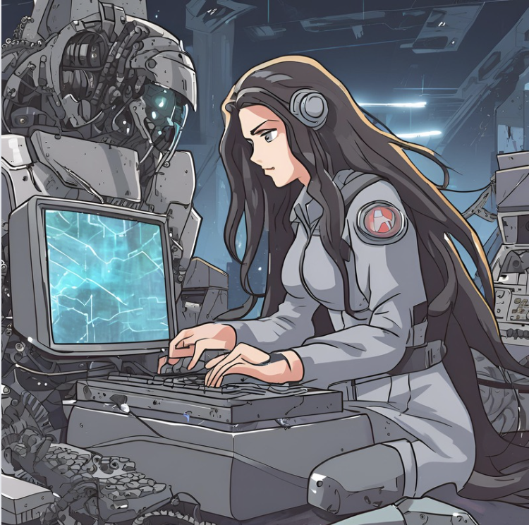

-
Front-End
Descrição
Mestre das Interfaces, é responsável por criar telas intuitivas e visualmente cativantes. Equipado com tecnologias como SEO, HTML, CSS e JavaScript, tem a missão de garantir a navegação web bela, acessível e interativa.
-
Back-End
Descrição
Infiltrado dos Bastidores, é responsável por desenvolver sistemas robustos e eficientes. Equipado com tecnologias como PHP, Python, Node.js e SQL, tem a missão de garantir o funcionamento seguro e otimizado dos servidores e bancos de dados, proporcionando uma experiência web estável e escalável.
-
UX
Descrição
Visionária da Experiência do Usuário (UX), é responsável por criar interfaces atraentes e de fácil compreensão. Equipada com ferramentas de prototipagem, como Figma, Sketch, Adobe XD, InVision, Axure RP e Balsamiq, tem a missão de cativar e manter os usuários na página.
-
Database
Descrição
Detentor da Informação, é responsável por desenvolver estruturas de dados concisas e de fácil acesso. Equipado com ferramentas de modelagem como SQL, MongoDB, PostgreSQL, Oracle, tem a missão de organizar e garantir a integridade dos dados armazenados.
-
QA
Descrição
Justiceiro do Controle de Qualidade, é responsável por assegurar a qualidade de produtos e serviços. Equipada com ferramentas de teste como Selenium, Jira, TestRail, tem a missão de garantir a funcionalidade e a confiabilidade dos sistemas, proporcionando uma experiência consistente aos usuários.
-
DevOps
Descrição
Pacificadora de Ambientes, é responsável por integrar e automatizar processos de desenvolvimento e operações. Equipado com ferramentas como Docker, Kubernetes, Jenkins, Git, tem a missão de garantir a entrega contínua e confiável de software, otimizando a colaboração entre equipes e melhorando a eficiência operacional.